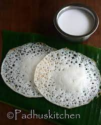

PONGAL

Pongal is a delicious South Indian porridge like dish that is made with rice and yellow moong lentils. It can be made sweet or savory. Here I share the savory version of Pongal recipe known as Ven Pongal or Khara Pongal laced with the wonderful flavors of cumin, asafoetida, curry leaves, ginger and black pepper. Not to forget the lovely aroma of ghee, in it.
ORDER YOUR PONGAL:
IDLY

Idli is one of the most healthiest and popular South Indian breakfast dish. These are soft, light, fluffy steamed round cakes made with a ground, fermented rice and lentil batter. Here I share my foolproof recipe with video and step-by-step photos that will help you in making the best idli. This Idli recipe is one of the earliest recipe from the blog which has been tried and tested with great results by many of our readers.
ORDER YOUR IDLY:
POORI

This Poori Masala is a delicious hotel style recipe to make the potato curry or gravy that is always enjoyed with poori. This dish gets its name Poori Masala or Puri Curry as it is served as a side dish with Poori (Indian fry bread). This South Indian Puri Curry is made with boiled potatoes, lots of onions, spices, lentils and herbs. Make this flavorful and tasty dish for a comforting weekend breakfast.
ORDER YOUR POORI:
APPAM
Appam also called as hoppers is made using raw rice, coconut, sugar, coconut milk and salt. Batter made using raw rice is fermented and made into spongy appam. Sometimes yeast, cooked rice or cooking soda is added for fermentation.
ORDER YOUR APPAM:
VEG BIRIYANI

This Hyderabadi Veg Biryani is an authentic Indian vegetarian recipe packed full of your favorite rice, veggies, and spices. Made with patience and lots of love, this delicious veg dum biryani requires both care and attention to detail. The savory flavors in your first bite are well worth the time and effort spent in the kitchen